Readout Emptying Qualification¶
This workflow shows how to move from an analytic segmented emptying pulse to a deployment-oriented study:
- build the analytic seed with
synthesize_readout_emptying_pulse(...), - replay it under Kerr, measurement, Lindblad, and hardware models,
- refine it with
refine_readout_emptying_pulse(...), - and compare it against a square pulse baseline with
verify_readout_emptying_pulse(...).
The implementation stays inside cqed_sim.optimal_control: the seed family remains the public construction layer, while the qualification and reduced-refinement path lives in cqed_sim.optimal_control.readout_emptying_eval.
Source-of-truth scripts¶
examples/studies/readout_emptying/linear_seed_validation.pyexamples/studies/readout_emptying/kerr_replay_and_chirp.pyexamples/studies/readout_emptying/dispersive_lindblad_validation.pyexamples/studies/readout_emptying/reduced_refinement.pyexamples/studies/readout_emptying/hardware_sensitivity.pyexamples/studies/readout_emptying/summary_benchmark.py
The scripts write their evidence package under outputs/readout_emptying_qualification/.
Checked-in evidence¶
The summary benchmark script refreshes the tutorial-ready figures below:
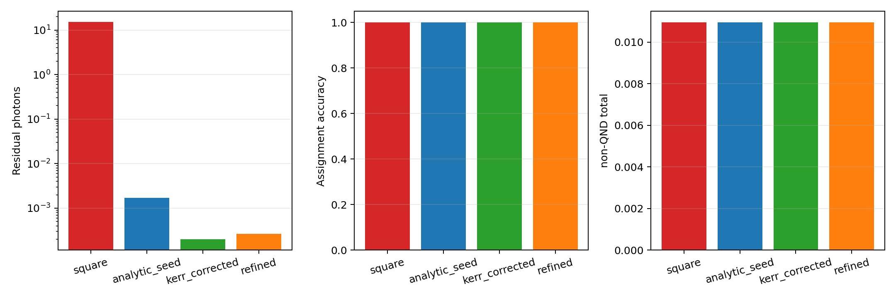
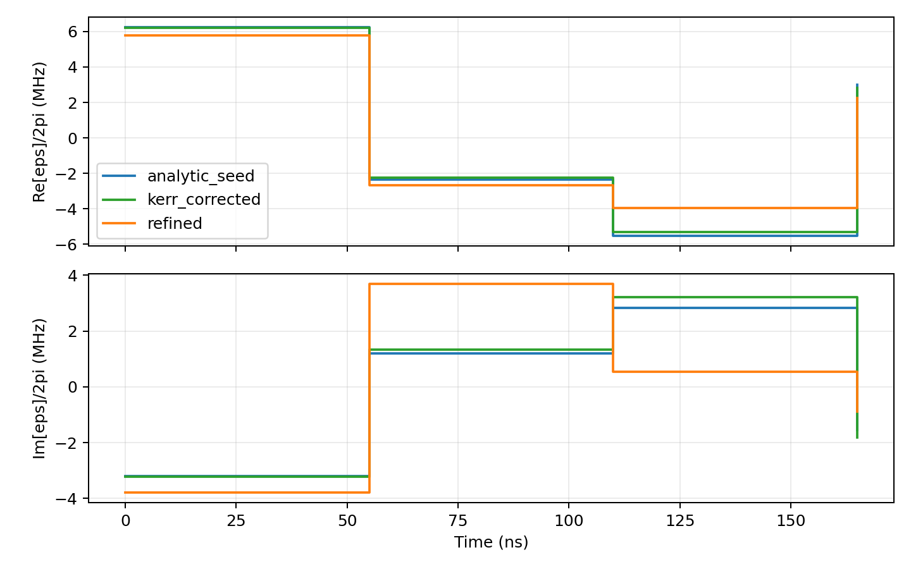
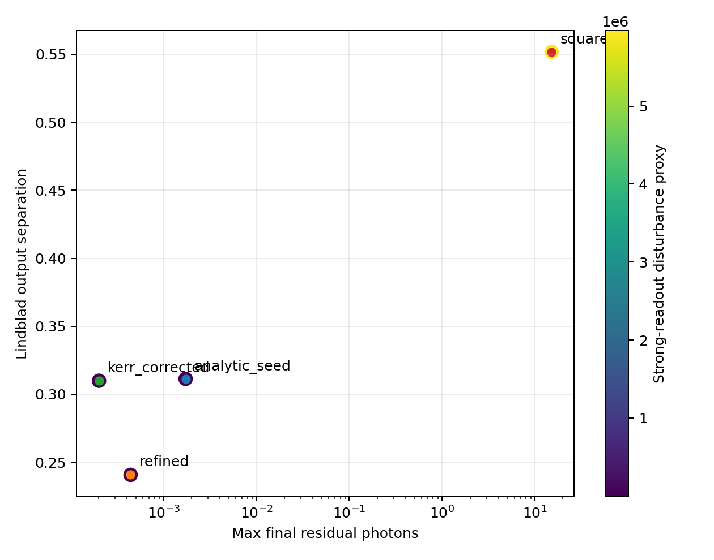
Interpretation:
- the old headline bars for
assignment accuracyandnon-QND totalwere misleading in the shipped fixture, because zero amplifier noise saturated the first metric and fixed-durationT1dominated the second; - the square pulse is still the easy baseline, but it now stands out in physically informative metrics: worst residual photons, worst Gaussian overlap error, longest post-pulse ringdown, and the largest strong-readout disturbance proxy;
- the analytic seed and the shared-chirp pulse keep the readout overlap error near
4.2e-2while collapsing the residual ringdown by more than four orders of magnitude relative to the square pulse; - the reduced refinement is where the workflow moves along the residual-versus-readout-utility frontier: it accepts some separation loss in exchange for much lower disturbance sensitivity and better robustness.
Nominal benchmark snapshot¶
The current checked-in summary run from examples/studies/readout_emptying/summary_benchmark.py reports:
- fast-model terminal residual photons drop from about
15.1for the matched-energy square pulse to1.7e-3for the analytic seed,2.0e-4for the shared-chirp pulse, and4.4e-4after reduced refinement; - under the calibrated-noise measurement model, the square baseline is pinned to a Gaussian overlap error of about
0.10, while the analytic and shared-chirp seeds improve that to about4.2e-2and the refined waveform stays competitive at about4.5e-2; - the post-pulse ringdown time needed to fall below
1e-2photons is about582 nsfor the square pulse and effectively0 nsfor the emptying-family pulses in this nominal run; - the phenomenological strong-readout disturbance proxy drops from about
5.97e6for the square pulse to about62.9for the analytic seed,61.9for the shared-chirp pulse, and0.40for the refined waveform; - in the dispersive Lindblad replay, output separation is still nonzero for every family: about
0.552for the square pulse,0.311for the analytic seed,0.310for the shared-chirp pulse, and0.241for the refined waveform.
That tradeoff is the intended behavior of the qualification-first path: the seed constructor gives an interpretable physics-driven waveform family, while the refinement harness moves along the residual-versus-readout-utility and disturbance frontier without changing the public construction API.
Linear seed evidence¶
The qualification path starts by confirming that the segmented seed really matches the exact two-branch linear construction.
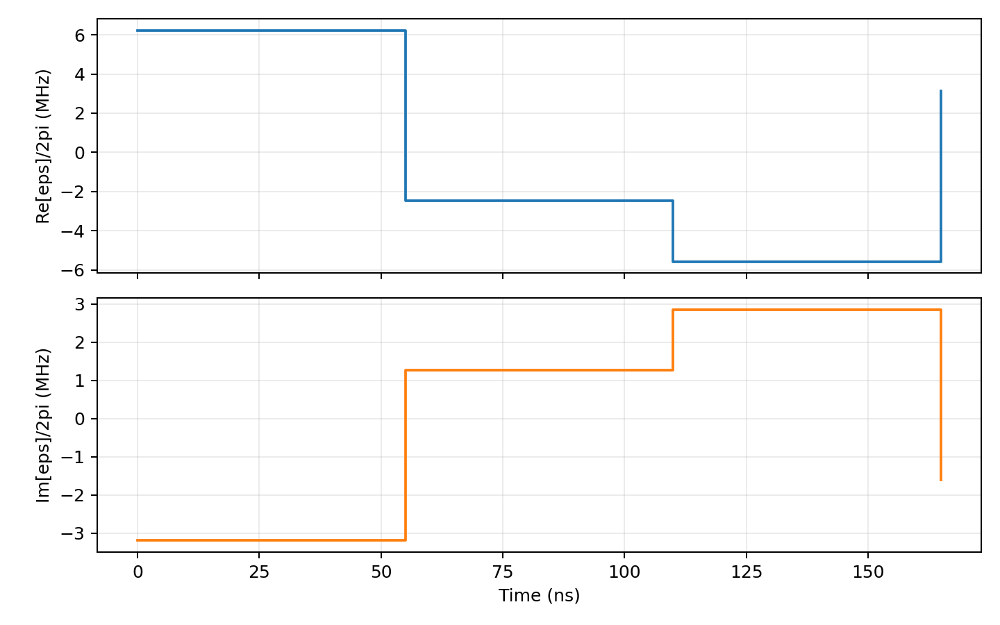
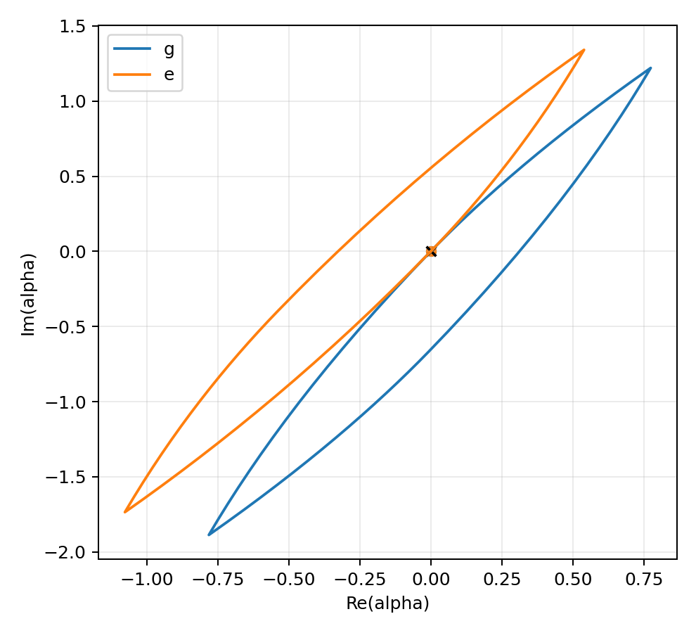
These are the direct simulation products of linear_seed_validation.py: the synthesized complex envelope and the \(g/e\) cavity trajectories returning to the origin.
Kerr replay and chirp correction¶
The next stage measures how much Kerr breaks the nominal linear cancellation and how well a shared chirp restores it.
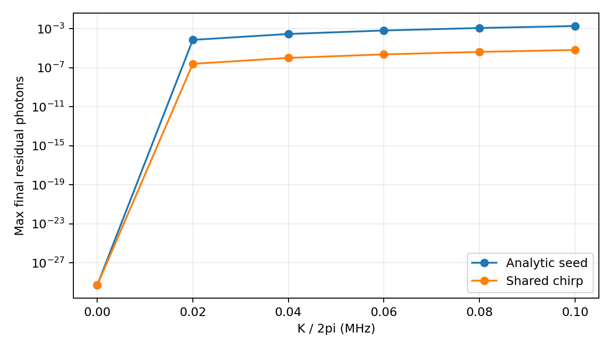
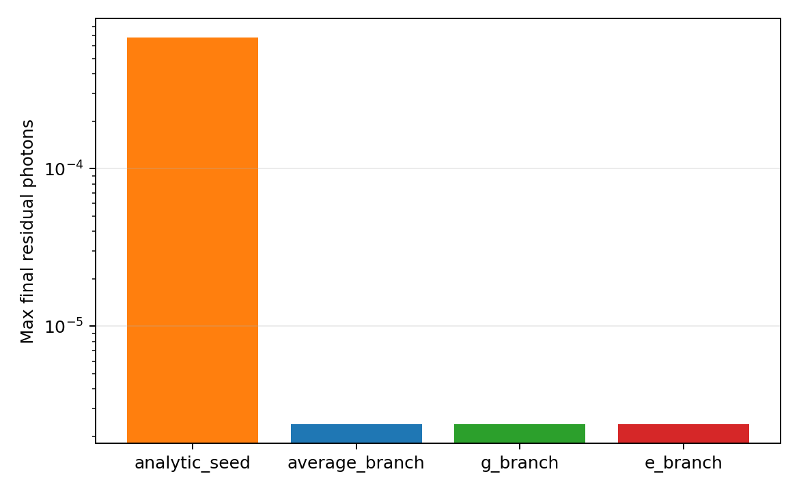
This is the main nonlinear caveat of the method: one physical chirped waveform serves both branches, so the correction is useful but not simultaneously exact.
Dispersive Lindblad readout validation¶
The workflow then checks whether the pulse still behaves like a good readout pulse, not just a good cavity-emptying pulse.
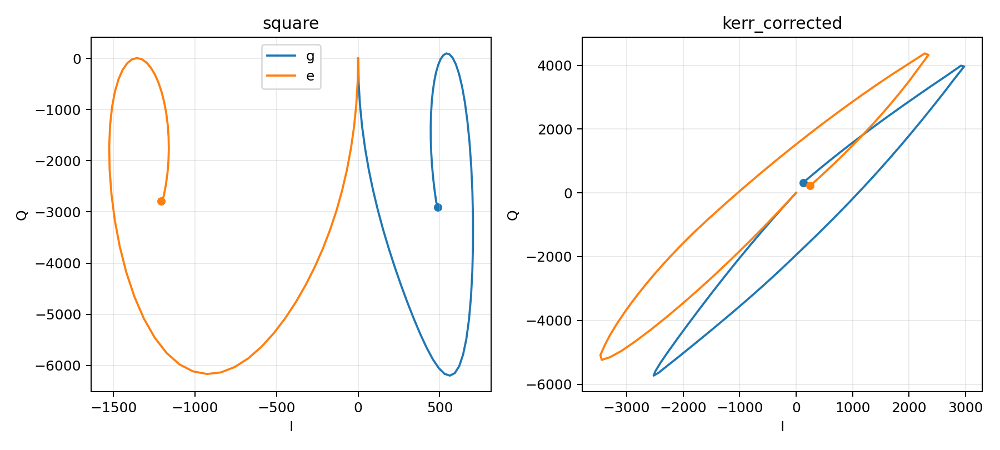
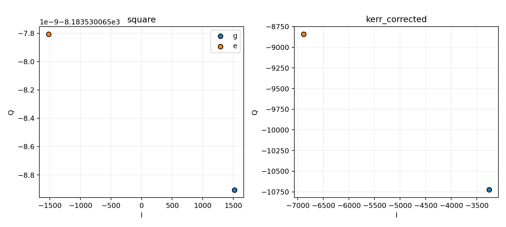
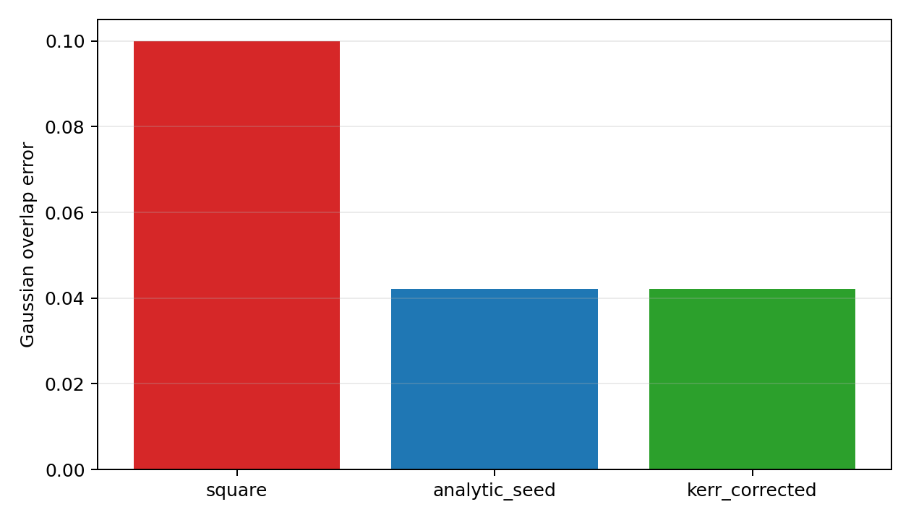
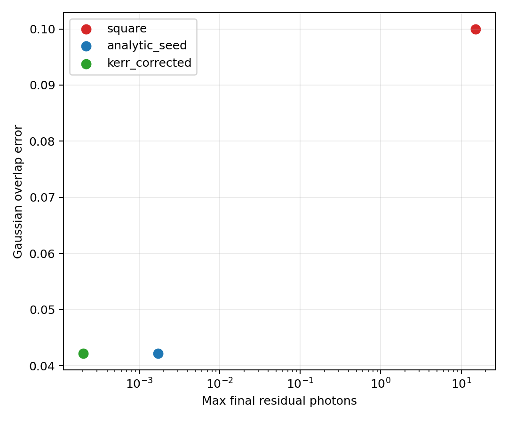
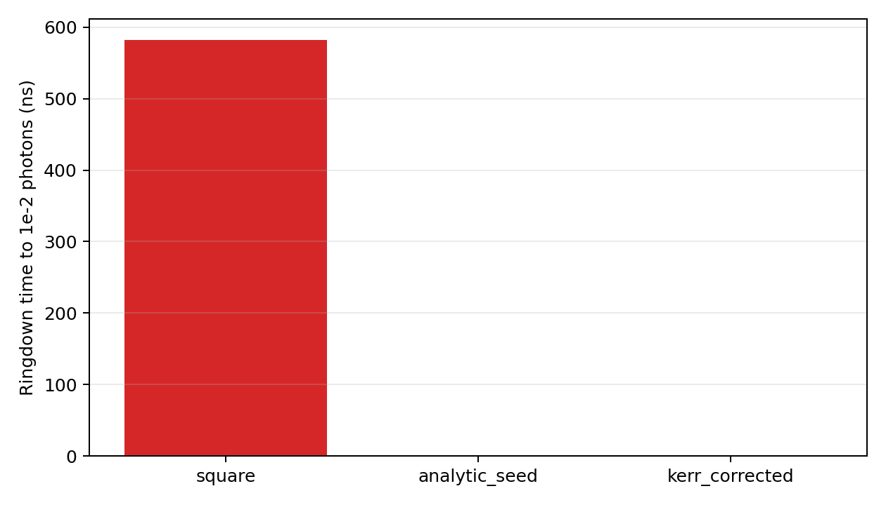
These plots come from dispersive_lindblad_validation.py and show the emitted-field separation, calibrated-noise IQ overlap, and the residual-versus-readout-performance frontier across pulse families. The overlap metric is now intentionally non-saturated: the study first calibrates the amplifier noise so the matched-energy square pulse lands near 10% Gaussian overlap error, then compares the emptying-family pulses against that same noisy measurement chain.
Hardware sensitivity¶
The final qualification pass asks whether the cancellation survives realistic waveform distortion.
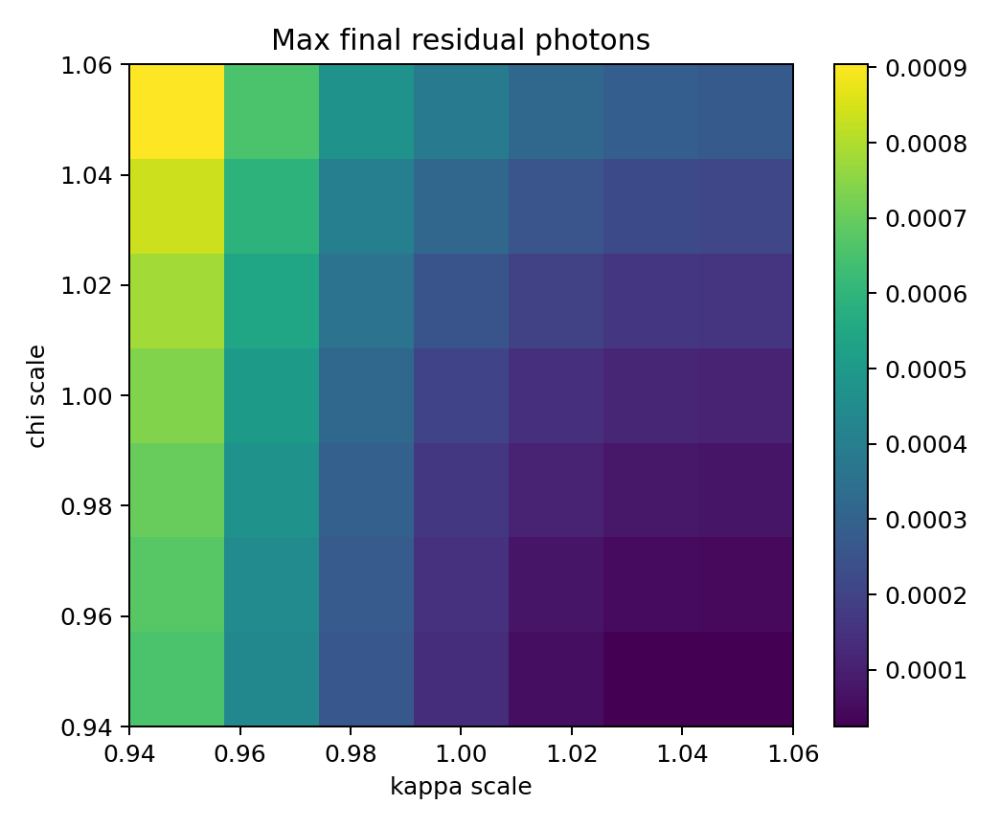
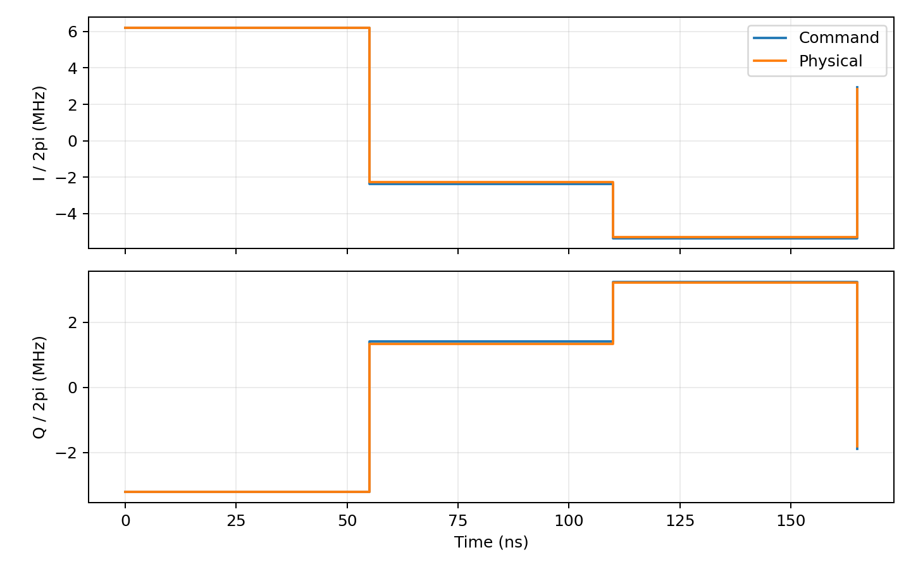
Those figures come from hardware_sensitivity.py and are the deployment-facing part of the workflow: they show how quickly the pulse degrades under parameter mismatch and finite-bandwidth filtering.
How the qualification layers map onto the code¶
- Model A:
replay_linear_readout_branches(...) - Model B:
replay_kerr_readout_branches(...) - Model C:
verify_readout_emptying_pulse(...)with aDispersiveReadoutTransmonStorageModelplusNoiseSpec - Hardware distortion:
verify_readout_emptying_pulse(...)orrefine_readout_emptying_pulse(...)with aHardwareModel
Evidence package¶
The full artifact set is generated under outputs/readout_emptying_qualification/:
00_linear_seed_validation/: segment waveform, phase-space trajectory, terminal zoom, and matrix-vs-ODE check01_kerr_replay_and_chirp/: residual-vs-Kerr, shared-vs-branch-specific chirp comparison, and chirp profile02_dispersive_lindblad_validation/: output-IQ trajectories, IQ clouds, calibrated overlap-error benchmark, residual-vs-discrimination tradeoff, and ringdown-tail comparison03_reduced_refinement/: disturbance-proxy-versus-strength and refined comparison plots04_hardware_sensitivity/: mismatch heatmap, prefilter-vs-postfilter comparison, and performance-vs-max-photons plot05_summary_benchmark/: the summary comparison and waveform-family figures embedded above
What Is And Is Not Being Proved¶
The updated qualification workflow makes three claims and keeps them separate:
- exact cancellation is proved by the matrix-versus-ODE and phase-space evidence in the linear branch model;
- readout usefulness is assessed by emitted-field separation, calibrated Gaussian overlap error, and residual-versus-discrimination tradeoff plots;
- deployment realism is assessed by robustness sweeps, hardware filtering, ringdown metrics, and the strong-readout disturbance proxy.
Two quantities remain in the JSON metrics but are no longer used as headline proof:
measurement_chain_accuracyis still reported as a Monte Carlo diagnostic, but it is no longer the main discrimination figure because finite-shot sampling can still saturate it;background_relaxation_totalis the fixed-duration Lindblad relaxation total for the nominalT1/Tphimodel. It is useful as a background reference, but it is not interpreted here as a pulse-induced non-QND metric.
The strong-readout disturbance metrics are intentionally labeled as phenomenological proxies. They are built from the existing occupancy-activated helper in cqed_sim.measurement.strong_readout, so they quantify how aggressively a waveform drives the system toward a strong-readout disturbance regime without claiming to be a microscopic breakdown model.
References¶
[1] D. T. McClure, H. Paik, L. S. Bishop, M. Steffen, J. M. Chow, and J. M. Gambetta, "Rapid Driven Reset of a Qubit Readout Resonator," Physical Review Applied 5, 011001 (2016). DOI: 10.1103/PhysRevApplied.5.011001
[2] M. Jerger, F. Motzoi, Y. Gao, C. Dickel, L. Buchmann, A. Bengtsson, G. Tancredi, C. W. Warren, J. Bylander, D. DiVincenzo, R. Barends, and P. A. Bushev, "Dispersive Qubit Readout with Intrinsic Resonator Reset," arXiv (2024). DOI: 10.48550/arXiv.2406.04891
[3] A. Blais, A. L. Grimsmo, S. M. Girvin, and A. Wallraff, "Circuit quantum electrodynamics," Reviews of Modern Physics 93, 025005 (2021). DOI: 10.1103/RevModPhys.93.025005